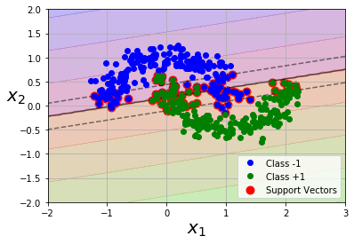
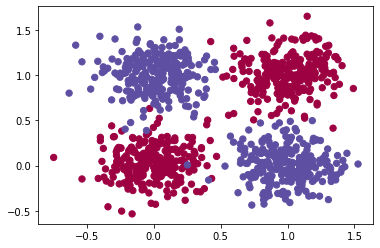

Machine Learning
Machine Learning
Back
Predict Medical Costs Using Regression Models
https://github.com/MintForever/Machine-Learning-Assignments/blob/master/assignments1-4/xl9yr_Assignment_1.ipynb
Non-Linear Classification with SVM

https://github.com/MintForever/Machine-Learning-Assignments/blob/master/assignments1-4/xl9yr__assignment_2_svm.ipynb
Clustering California Housing with K-means
https://github.com/MintForever/Machine-Learning-Assignments/blob/master/assignments1-4/xl9yr_assignment_3_kmeans.ipynb
Benchmarking Neural Nets with the XOR Problem

https://github.com/MintForever/Machine-Learning-Assignments/blob/master/assignments1-4/xl9yr_assignment__4__ann.ipynb